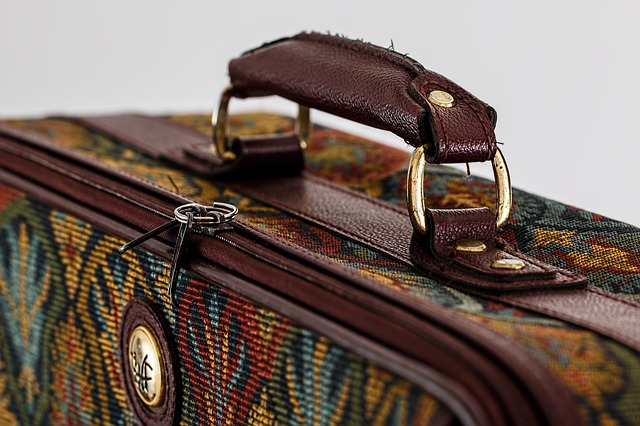
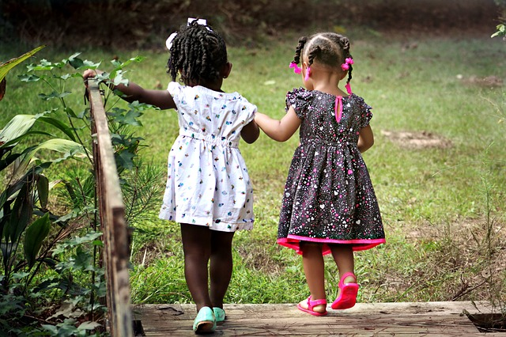
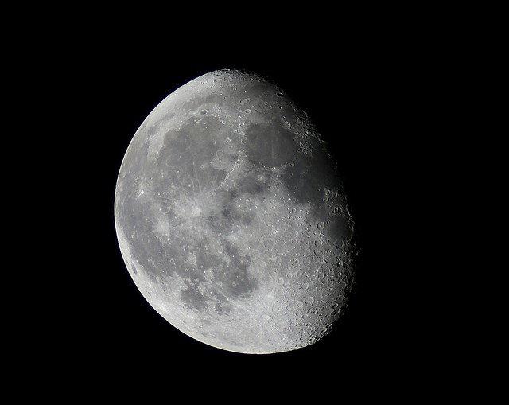
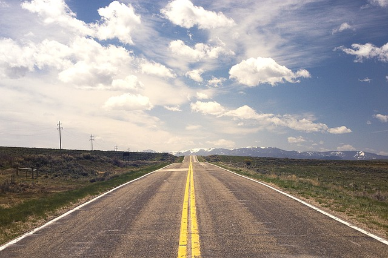
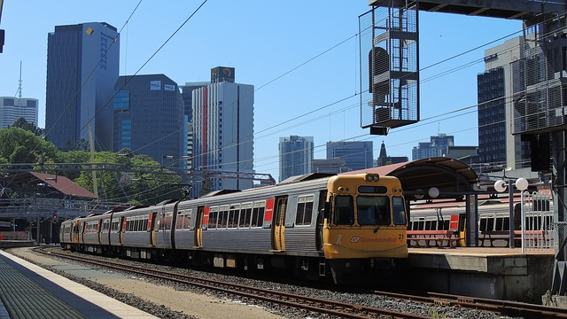

| 안내센터(도봉산, 창포원) | 070-4465-7905~6 |
|---|---|
| 서울시청 자연생태과 | 02-2133-2165 |
| 경찰서 | 112 |
| 소방서 | 119 |
 서울두드림길 각 노선 구간은 관광지가 아닌 우리 주변의 마을과 등산로, 숲길로 이루어져 있습니다. 미리 홈페이지를 통해 걷고자 하는 노선을 잘 살펴보시고 시간, 거리, 주변 볼거리 등을 참고하여 도보여행을 계획하세요. 휴대폰, 지도, 음용수 등 개인의 도보여행 상황에 맞는 준비물을 꼼꼼히 챙기세요.
 혼자 여행을 할 경우에는 주변 사람들에게 행선지를 꼭 알려둡시다. 너무 많은 인원이 함께하는 단체 도보여행은 자칫 주변 주민에게 불편을 줄 수 있습니다. 걷기 여행은 호젓함 속에 그 참맛이 있기에 가족, 친구 등 5명 이내의 인원이 함께하면 좋습니다.
 새벽걷기는 주변 주민 생활에 피해를 줄 수 있습니다. 너무 이른 걷기는 피해해주세요. 야간걷기는 주변 상황이 잘 파악되지 않음으로써 발생할 수 있는 위험 소지가 많습니다. 일출과 일몰시간을 챙겨서 그 안에 걸어주세요.
 새 지정된 노선으로만 도보여행을 즐겨주세요. 서울의 등산로와 숲길에 무분별한 샛길이 많이 만들어지고 있답니다. 주변 농작물 및 열매는 눈으로 바라만 봐 주세요. 공식 야영지가 없으니 야영 및 취사는 피해주시고, 개인이 사용하는 물품은 최대한 줄이고, 쓰레기는 반드시 되가져가세요. 약수터, 화장실, 대피소 등 공공시설물은 우리 이웃을 위해 깨끗히 사용해주세요.
 대중교통 이용은 도보여행의 일부분입니다. 자유로운 걷기를 위해 대중교통을 이용하는 것이 훨씬 편리할 수 있습니다. 각 노선별 세부 정보에 대중교통을 통한 접근방법이 게재되어 있습니다.
자그마한 불씨와 순간의 실수로 인해 숲 전체가 사라질 수 있고, 산불로 훼손된 자연을 복원하는데 100년 넘게 소요됩니다. 도보여행시 화기반입니다 흡연이 금지되어 있음은 물론이구요. 실화는 처벌대상이 됨을 명심하세요.
서울두드림길에서의 도보여행 중 안전사고의 기본적인 책임은 이용객 몫입니다 안전사고가 일어나지 않도록 항상 유의해주시고, 노선에 위험요소가 있으시면 홈페이지에 글을 남겨주시거나 대표번호로 전화주세요.